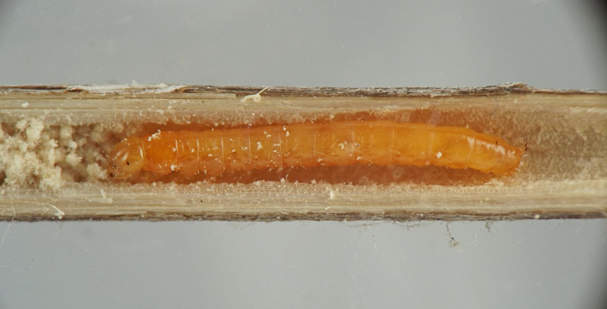
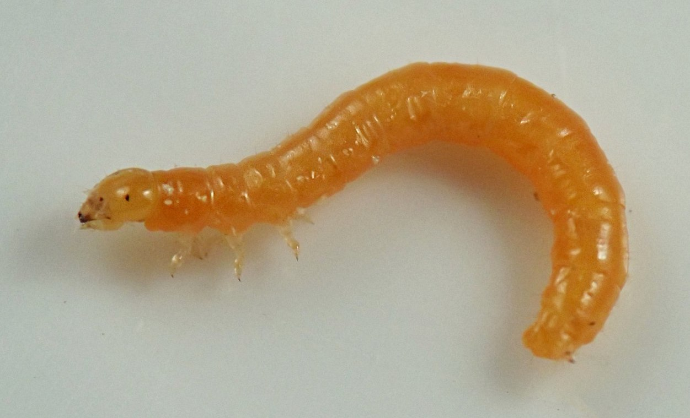
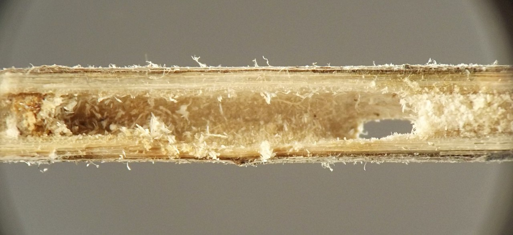
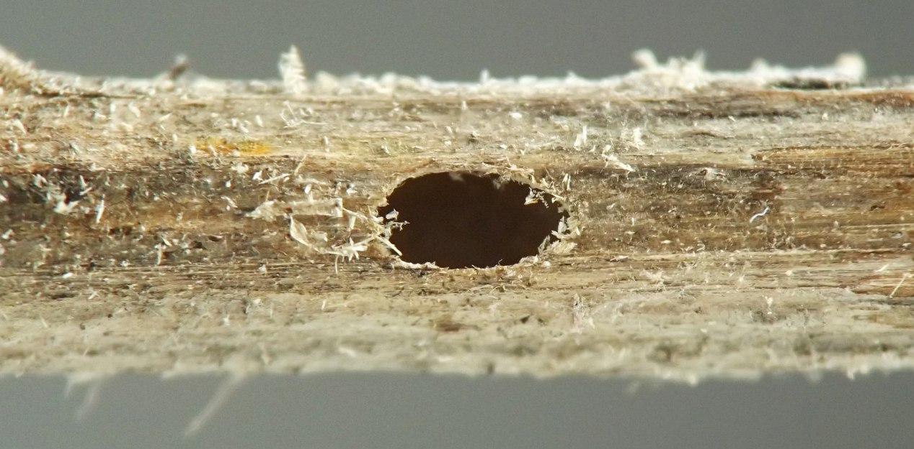
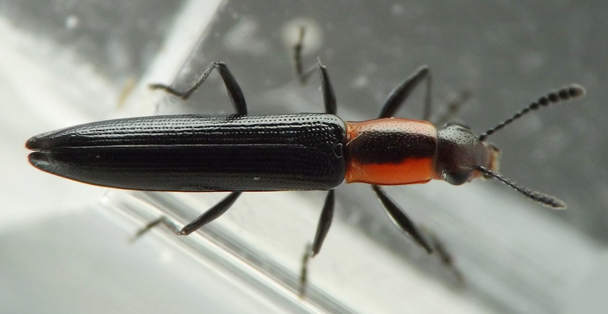

Stem borer (Coleoptera: Erotylidae) in Achillea
| Record no.: | 0010 |
|---|---|
| Feeding guild: | Stem borer |
| Taxonomy: | Coleoptera: Erotylidae: Erotylinae: Languriini: cf. Acropteroxys gracilis |
| Stages observed: | trace, larva, adult |
| Distribution observed: | IA |
| Hosts in Achillea: | A. millefolium (yarrow) |
In late April, I located two dead stems each inhabited by a larva of this borer, after the stems had overwintered in the field. The affected stems belonged to plants grown in a garden bed.
In each case, the larva had hollowed out an area roughly 30cm in length in the middle part of the stem, with frass packed tightly in the upper end of the tunnel to a length of several centimeters. The part of the tunnel in which I found the larva was entirely devoid of frass and it was clear the larva had moved most or all frass to the top of the tunnel. At least one tunnel ended at its bottom with a rod of compacted frass approximately 10-15mm in length. Both tunnels ended neatly well above the base of the stem, with solid undisturbed pith below them all the way down to ground level.
A larva from one of the tunnels was an almost shockingly vibrant orange color. It prepared a ~20mm-long pupation chamber in its tunnel, bounded on both ends by wads of frass, and emerged as an adult in mid-May through an oval hole in the wall of the stem at the top of the pupation chamber. The color pattern of the adult appears consistent with Acropteroxys gracilis (see, e.g., VanDyk 2025a).

 Prev
Prev
{kind=link}
{kind=link}

{kind=link}

{kind=link}

{kind=link}


{kind=link}
{kind=link}
- VanDyk, J., ed. 2025a. Species Acropteroxys gracilis - Slender Lizard Beetle. Species page at BugGuide.net. Retrieved July 28, 2025 from https://bugguide.net/node/view/17702/bgimage.[return to in-text citation]
Page created: October 2, 2025. Last update: none